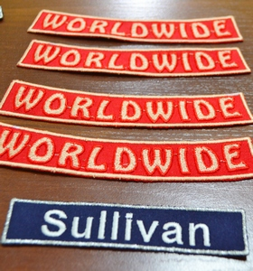

 Изначально вам необходимо понять - что из себя на самом деле представляет нашивка? Нашивка - это знак, можно также причислить ее к гербу, который помогает окружающим вас людям понять, к какому виду войск, подразделению, команде и т.д. Вы относитесь. Раз это герб, то, для того чтобы создать нашивку необходимо следовать таким же критериям, как и при создании герба - эти требования изучает наука геральдика.
Учение о гербах, так же как и сами гербы появилась еще в древности. Воины, желая внешне проявить их агрессивность, расписывали и разукрашивали свои щиты и доспехи узорами. Чуть позже люди договорились унифицировать знаки различия для каждой общности. Так появились кресты у крестоносцев и орлы у легионов Древнего Рима.
Внешние обозначения имели еще одну очень значимую функцию - в пылу ожесточенной битвы очень сложно отличить "своего" от "чужого", по этой причине не редко происходили ненужные случайные смерти. Идентификация яркими обозначениями увеличивала шанс того, что твой напарник успеет увидеть что ты "свой".Еще позже по форме логотипа, а также по узорам на щите воина люди могли узнать конкретного человека, который носит этот щит. Именно по этой причине многие нашивки даже в современности имеют силуэт щита.
В любом случае, определиться с итоговой формой нашивки - ваша задача и вы полностью свободны в том, чтобы придумать нечто особенное и уникальное. Однако помните, что чем проще и примитивнее будет силуэт у нашивки, тем легче ее визуально воспринимать, по этой причине не стоит гнаться за бесчисленным числом углов и сложнейшими изгибами форм.
При решении вопроса цветов, можно обратиться опять же к правилам геральдики, однако здесь присуще некоторые особенности. В классической геральдике, кроме металла и мехов применяли 5 цветов: розово-фиолетовый, голубой, черный, цвет травы и алый. В знаках отличия, которые существуют в наше время, не существуют рамок, которые могли бы Вас ограничивать при выборе цвета при изготовлении нашивки на заказ. Однако если вы хотите знать мое мнение, то я не стал бы советовать изображать на нашивке команды бесчисленное количество цветов. Основное назначение, которое несет в себе расцветка - это читабельность и, желательно, читабельность с большого расстояния, а если Вы напишите каждую буквы различным цветом, то читать, что написано на такой нашивке будет достаточно проблематично. Также стоит сказать и контрасте. Если Вы хотите на белой ткани вышить очень светлыми нитками - это плохая идея. Нашивка должна быть читабельной.
Здесь перед вами необъятных размеров простор для полета фантазии. Ограничений по сути не существует. Музой, для создания рисунка для нашивки может стать все что угодно, любимый герой, или творчество художника. Основное, что хочется посоветовать - это не останавливать свой взгляд на стандартных "штампах". Постарайтесь создать что-то уникальное!
Если вы будете следовать этим несложным указаниям, то у вас непременно получится создать классную нашивку. Дерзайте!
Мы всегда рады помочь Вам в вопросе изготовления нашивок на заказ. Свяжитесь с нами для заказа.
063 515 98 28
095 007 59 79
vyshyvka.kiev@gmail.com
Copyright © 2016 · All Rights Reserved ·